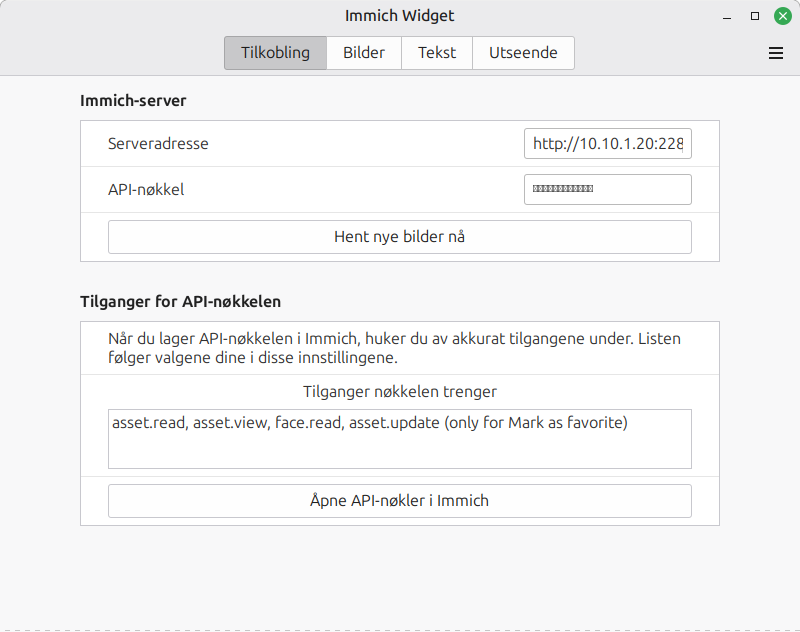

Immich Widget 1.1
En widget for skrivebordet i Linux Mint (Cinnamon) som viser bilder fra din egen Immich-server som lysbildefremvisning. Krever Immich 3.2 eller nyere.
Installasjon
- Kopier mappen
immich-widget@raybomb87 til ~/.local/share/cinnamon/desklets/.
- Høyreklikk skrivebordet → Legg til skrivebordsprogrammer. Velg Immich Widget og trykk +.
- Høyreklikk widgeten → Konfigurer. Skriv inn Immich-adressen (f.eks.
http://192.168.1.10:2283).
- Gjør valgene dine på sidene Bilder, Tekst og Utseende først. Da vet widgeten hvilke tilganger API-nøkkelen trenger.
- Lag API-nøkkelen som beskrevet under, og lim den inn i feltet API-nøkkel.
Lag API-nøkkelen – med akkurat de tilgangene du trenger
- Åpne siden Tilkobling i widgetens innstillinger. Feltet Tilganger nøkkelen trenger viser nøyaktig hvilke tilganger valgene dine krever. Det oppdateres av seg selv når du endrer noe.
- Trykk Åpne API-nøkler i Immich. Nettleseren åpner riktig side i Immich (logg inn hvis du blir bedt om det).
- Trykk Ny API-nøkkel, gi den et navn (f.eks. Bildeframme) og huk av bare tilgangene fra feltet.
- Kopier nøkkelen og lim den inn i API-nøkkel i widgeten.

Slik henger valgene og tilgangene sammen:
| Tilgang | Trengs når |
|---|
asset.read, asset.view | Alltid – for å finne og vise bildene |
face.read | Beskjær rundt ansikter, Sakte zoom (Ken Burns) eller Navn på personene i bildet er på |
person.read | Du henter personlisten eller har huket av personer |
album.read | Du henter albumlisten eller har huket av album |
tag.read | Du henter taggelisten eller har huket av tagger |
asset.statistics | Valgfritt: viser antall bilder for hver person og tagg i listene |
memory.read | På denne dagen er på |
asset.update | Bare hvis du vil bruke Merk som favoritt i høyreklikkmenyen |
Endrer du valgene senere slik at det trengs en ny tilgang, sier widgeten fra med meldingen «API-nøkkelen mangler tilgangen …». Gå da til API-nøklene i Immich, trykk på blyanten ved nøkkelen og huk av den nye tilgangen. Nøkkelen i widgeten trenger ikke byttes.
Velg bildene
- Personer, album og tagger: trykk Hent personer, album og tagger fra Immich og huk av dem du vil se. Avkryssede betyr «hvem som helst av dem». Ingen avkrysset betyr alle.
- På denne dagen: bilder tatt på dagens dato tidligere år. Finnes det ingen, brukes de andre valgene.
- Filtre: bare favoritter, minst X stjerner, tidsrom, steder (by eller land, skilt med komma) og Søk etter (det smarte søket i Immich, f.eks. «strand» eller «snø»). Alle filtrene virker sammen.
- Skjermbilder er utelatt med mindre du slår dem på.
Tekst og utseende
- Tekst: slå hele teksten av eller på, og hver del for seg: dato, «for N år siden», sted, navn på personene og beskrivelsen fra Immich. Velg plassering (oppe/nede, venstre/midten/høyre), tekstskygge og en bakgrunn bak teksten med egen avrunding og dekkevne.
- Overganger: huk av én eller flere: toning, skyv mot venstre/høyre/opp/ned, zoom og vend. Med flere valgt veksler widgeten mellom dem, tilfeldig eller etter tur.
- Sakte zoom (Ken Burns): bildet zoomer sakte inn mot personene mens det vises.
Bruk
- Klikk: neste bilde. Midtklikk: åpne bildet i Immich.
- Høyreklikk: Merk som favoritt / Fjern fra favoritter, og Ikke vis dette bildet igjen (skjuler bildet bare i widgeten, ikke i Immich).
- Fremvisningen tar pause mens musepekeren er over bildet.
- Bildene lagres i
~/.cache/immich-widget@raybomb87/, så widgeten virker også uten nett.